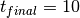
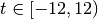
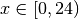
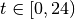
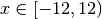

my_globals module¶
This module contains constants and functions that are used for general use.
This module contains information about the following constants:
- Identifiers for activity codes
- File names file paths for saving figures for the different demographics
- File names file paths for saving figures for the different activities
-
my_globals.check_filename_extension(fname, ext)[source]¶ This function returns whether or not the given file name has the given filename extension.
Parameters: - fname (str) – the file name
- or str ext (list) – a single (or list) of acceptable filename extensions
Returns:
-
my_globals.fill_out_data(t, y)[source]¶ This function takes an array of activity start times and activity codes from an activity diary and fills out the activity, minute-by-minute in between two adjacent activities.
Parameters: - t (numpy.ndarray) – the start times in an activity diary
- y (numpy.ndarray) – the activity codes in an activity diary
Returns:
-
my_globals.fill_out_time(t)[source]¶ This function takes an array of activity start times from an activity diary and fills out the time, minute-by-minute in between two adjacent activities
Example, if t = (0, 4, 7) (and ) we get the following:
- (0, 1, 2, 3)
- (4, 5, 6)
- (7, 8, 9, 10)
Parameters: t (numpy.ndarray) – the start times in the activity diary [minutes, universal time] Returns: None
-
my_globals.from_periodic(t, do_hours=True)[source]¶ This function returns the time of day in a 24 hour format. It takes the time  and expresses it at time  where 0 represents midnight. The same calculation can be done to represent the time in minutes
Parameters: - t (float) – the time in hours [-12, 12), or the respective minutes [-12 * 60, 12 * 60)
- do_hours (bool) – a flag to do the calculations in hours (if True)
Returns: the time in [0, 24) or in minutes [0, 24 * 60)
-
my_globals.get_ecdf(data, N=100)[source]¶ Given data, this function calculates the probability data from the empirical cumulative distribution function (ECDF).
Parameters: - data (float) – an array containing the relevant data to get the ECDF of
- N (int) – the amount of samples in calculating the ECDF results
Return y: the ECDF
Return type: float array
Return x: the values sampled for the ECDF
Return type: float array
-
my_globals.group_time(t)[source]¶ This function takes data from an activity diary and groups that activity diary into , minute by minute arrays from start to end for each activity (start, start + 1, … end-1, end)
Parameters: t (numpy.ndarray) – the start times from an activity diary [minutes, universal time] Returns: the grouped start/end pairs for ech activitiy Return type: list
-
my_globals.hours_to_minutes(t)[source]¶ This function takes a duration of time in hours and converts the time rounded to the nearest minutes.
Parameters: t (float) – a duration of time [hours] Returns: the time in minutes
-
my_globals.initialize_random_number_generator(seed=None)[source]¶ This function initializes the random number generators with a specified seed, if given (i.e., that is if seed is not None). Both the random module and the numpy.random module’s random number generator are seeded. This is useful for reproducing results.
Parameters: seed (int) – the seed for the number generator Returns:
-
my_globals.load(fname)[source]¶ This function loads data from a .pkl file.
Parameters: fname (str) – the file name to be loaded from Returns: the data unpickled
-
my_globals.sample(data, N)[source]¶ This function creates N samples of the empirical distribution of the values in the data array.
Parameters: - data (numpy.ndarray) – the data to sample
- N (int) – the number of data points to sample
Returns:
-
my_globals.sample_normal(std, dx)[source]¶ This function samples a normal distribution centered at zero assuming a max and minimum acceptable value [dx, -dx].
Parameters: - std (float) – the standard deviation
- dx (float) – the amount of total deviation from the mean allowd
Returns:
-
my_globals.save(x, fname)[source]¶ This function saves a python variable by pickling it.
Parameters: - x – the data to be saved
- fname (str) – the file name of the saved file. It must end with .pkl
-
my_globals.save_diary_to_csv(df, fname)[source]¶ This function saves an activity diary as a .csv file. The output is changed from the original data in the following manor. We add + 1 minute to the end time so that 16:00 - 16:59 (original version) becomes 16:00 - 17:00 (saved version).
Parameters: - df (pandas.core.frame.DataFrame) – the activity-diary output of the simulation
- fname (str) – the file name of the saved file. It must end with a .csv extension
Returns:
-
my_globals.save_zip(out_file, source_dir)[source]¶ This function compresses an entire directory as a zip file.
Parameters: - out_file (str) – the filename of the save zip file without the .zip extension
- source_dir (str) – the directory to be compressed
Returns: the name of the compressed directory
-
my_globals.set_distribution(lower, upper, mu, std)[source]¶ This function sets the truncated normal probability distribution.
Parameters: - lower (int) – the lower bound in number of standard deviation from the mean
- upper (int) – the upper bound in number of standard deviation from the mean
- mu (int) – the mean
- std (int) – the standard deviation
Returns: the function for the truncated normal distribution
-
my_globals.set_distribution_dt(lower, upper, mu, std, x_min)[source]¶ This function set the truncated normal probability distribution subject to the fact that there is an assigned lowest value.
If the lowest value of the normal distribution is lower than the lowest allowed value, change the distribution so that the standard deviation allows the distribution to not be lower than the lowest allowed value.
Parameters: - lower (int) – the lower bound in number of standard deviation from the mean
- upper (int) – the upper bound in number of standard deviation from the mean
- mu (int) – the mean
- std (int) – the standard deviation
- x_min (int) – the lowest allowed value
Returns: the function for the truncated normal distribution, the standard deviation of the distribution
Return type: tuple
-
my_globals.to_periodic(t, do_hours=True)[source]¶ This function returns the time of day in a periodic format. It takes the time  and expresses it at time  where 0 represents midnight.
Parameters: - t (float) – the time in hours [0, 24)
- do_hours (bool) – a flag to do the calculations in hours (if True) or minutes if False
Returns: the time in [-12, 12) or minutes [-12 * 60, 12 * 60)
Return type: float